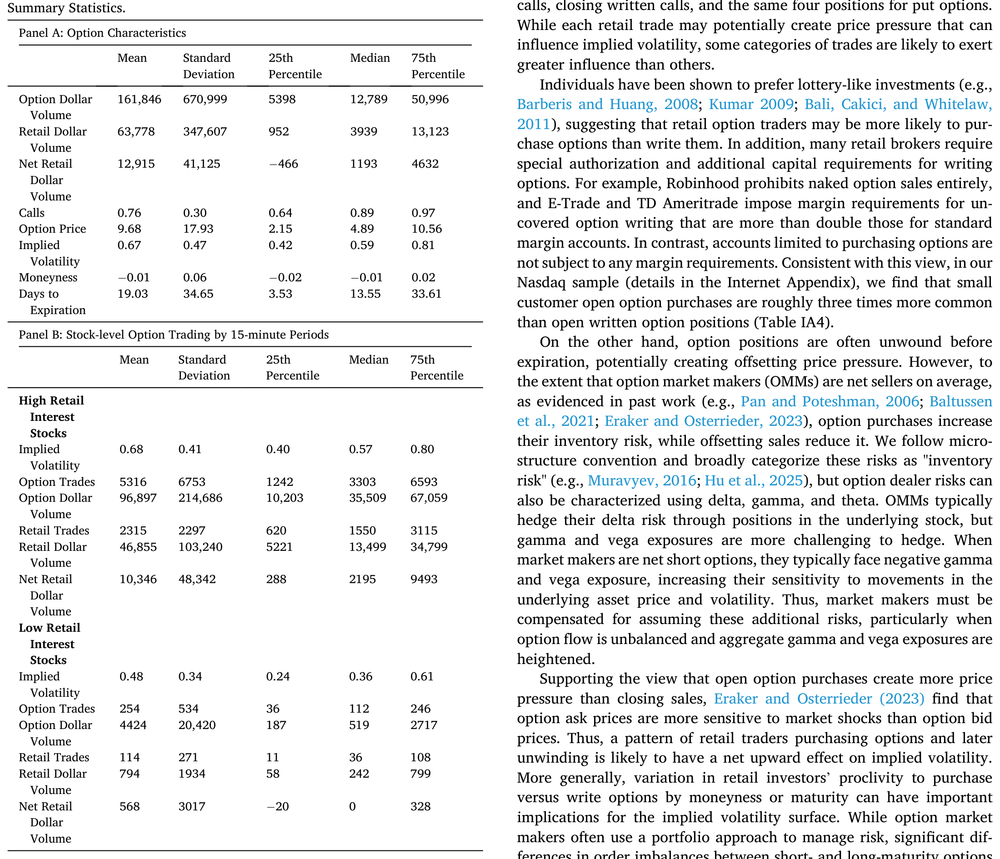
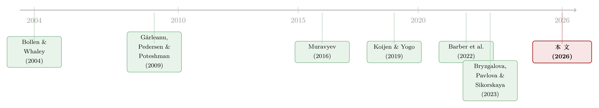

当波动率曲面被「散户」推歪：从券商宕机里读出的需求压力
本文读的是 Eaton, Green, Roseman & Wu (2026, Journal of Financial Economics)：散户在期权市场上系统性地买入短期、价外的彩票型合约、卖出长期合约；利用「券商交易平台宕机」作为对散户交易的外生冲击，作者发现宕机期间散户偏爱的期权隐含波动率显著下降（平均降 0.023，相当于中位数的 4%），而长期期权的隐含波动率反而上升 0.020。换句话说，我们一直当作「信息」与「风险」来读的那张波动率曲面，有相当一部分形状，其实是散户需求压力压出来的。
1 引言：一张被默认为「客观」的曲面
在期权这门生意里，有一个被无数研究、无数交易台奉为圭臬的对象——隐含波动率曲面 (implied volatility surface)。它把不同到期日、不同行权价的期权价格，统一翻译成一个语言：波动率。于是我们得到了三条几乎成为教科书标配的「形状」：沿到期日展开的期限结构 (term structure)，沿行权价展开的微笑或偏斜 (smile / smirk)，以及同一行权价上看涨与看跌之间的差 (call-put spread)。
长期以来，人们读这张曲面的方式是「向内看」：曲面凸起的地方，是市场预期波动更大的地方；偏斜陡峭，意味着市场为下行风险付了更高的保险费；期限结构的斜率，被解读为对未来风险环境的预期。一句话——曲面是信息的镜子，照见的是公司基本面、对冲需求和知情交易者的判断。这套叙事的背后，站着一长串严肃的工作：从 Black 与 Scholes (1973) 把期权价格翻译成波动率，到 Pan (2002)、Dennis 与 Mayhew (2002) 把偏斜读成跳跃风险与风险中性偏度，再到 Xing、Zhang 与 Zhao (2010)、Yan (2011) 把微笑的斜率拿来预测股票横截面收益。曲面，似乎是一个客观的、承载信息的物件。
可是，如果这张曲面的形状，有一块是被一群「最不像知情交易者」的人——散户——用真金白银的下单硬生生推出来的呢？
这正是本文要回答的问题，也是它真正的张力所在。
2 一个先于识别的提问：散户到底怎么交易期权？
要回答「散户能不能推动波动率曲面」，得先回答一个更朴素的问题：散户到底买什么、卖什么？
这件事并非空穴来风。近些年，佣金归零、远程办公带来的闲暇、社交媒体与财经媒体的推波助澜，让散户期权交易出现了爆发式增长——Banerji (2021) 报告过散户期权交易在五年里翻了四倍。而个人投资者素来以经验不足、追涨杀跌、偏好「赌博式」资产著称（Kumar, 2009；Barberis 与 Huang, 2008；Bali、Cakici 与 Whitelaw, 2011）。期权天然带着彩票属性，于是一个自然的猜想是：散户的投机会集中在那些彩票特征最强的合约——短期、价外的合约。
作者借用了 Bryzgalova、Pavlova 与 Sikorskaya (2023)（下称 BPS）提出的散户期权识别算法，配合 OPRA（Option Price Reporting Authority）的全市场逐笔数据，刻画了散户的偏好。结论很干净：散户的需求高度集中在短期合约（一周到期的合约占了相当大一块），偏爱看涨胜过看跌，偏爱近价和价外胜过深度价内或深度价外。这与更早的 Lakonishok 等 (2007) 对折扣券商客户的刻画一脉相承。
接着，一个更关键的区分浮现出来：买，还是卖？这一步至关重要，因为在做市商无法完美对冲的世界里，散户买入期权会推高价格、表现为隐含波动率上升；散户卖出（写）期权则反向压低价格、压低隐含波动率。两者方向相反。
而散户的买卖倾向，在不同合约上并不一致。总体上散户是净买方，且净买入最强的正是短期价外期权；但在长期合约上，散户反而呈现净卖出（写）的倾向。这背后还有制度原因：很多券商对卖出期权设置了额外的资本与授权门槛——Robinhood 干脆禁止裸卖期权，E-Trade 和 TD Ameritrade 对无担保卖出施加的保证金要求是普通保证金账户的两倍以上，而纯买入账户则没有保证金约束。于是在 Nasdaq 样本里，小客户的开仓买入大约是开仓卖出的三倍。
把这两块拼起来，本文的核心假说就成型了：
散户在短期期权上是净买方 → 会抬高短端隐含波动率；散户在长期期权上是净卖方 → 会压低长端隐含波动率。于是散户的存在，整体上会让 IV 期限结构变得更陡。
下面这张描述性统计表，把样本的基本面貌摆了出来——注意隐含波动率的中位数约为 0.57、看涨合约占比高达 0.76、到期天数中位数仅 13.55 天，这些数字本身就已经在为「短期、看涨」的散户故事背书。

Table 1
3 识别策略：用「宕机」制造一场天然实验
假说有了，可怎么检验？这里横着一道经典的内生性 (endogeneity) 难题：散户的交易量本身就和市场环境纠缠在一起——市场越热闹，散户越活跃，波动率也越高。你看到「散户多、IV 高」，根本分不清是散户推高了 IV，还是高 IV 把散户吸引了进来。
但真正关键的一步，是作者找到的那把外生的「手术刀」：散户券商的平台宕机 (brokerage platform outage)。
这个思路并非首创——Barber 等 (2022) 用 Robinhood 宕机研究注意力驱动的交易，Eaton 等 (2022) 用宕机研究散户对股票市场的影响，BPS (2023) 也用过类似设定。它的妙处在于：当 Robinhood、E-Trade 这类散户大本营的平台突然崩了，散户「想交易也交易不了」，而这种崩溃在很大程度上是技术故障，与当下的基本面无关。于是我们得到了一次对散户参与度的、近乎随机的负向冲击。
在此之上，作者搭了一个双重差分 (difference-in-differences, DiD) 型的设计：
- 时间维度的对照：把宕机时段的期权成交量与隐含波动率，拿来和前一周同一时段作比较——同样的星期几、同样的钟点，尽量剥离日内与周度的规律性。
- 横截面维度的对照：用指示变量把「散户偏爱的期权」（短期、价外、看涨）与一组「对照期权」相比，看冲击是否只打在散户那一侧。
这套设计能成立，靠的是两个能被验证的前提。其一，宕机确实显著地掐住了散户的脖子：高散户兴趣股票的期权美元成交量在宕机期间约低 13%，而非散户的期权交易在宕机期间没有可见变化——后者尤其重要，因为它直接回击了「是市场环境同时导致宕机和 IV 变动」的担忧。其二，这些合约绝非冷门：高兴趣组里，每只股票每 15 分钟的散户成交笔数均值（中位数）超过 2300（1550）笔，对应散户美元成交量近 $46,855；而低兴趣组每 15 分钟只有 114 张合约、$794。这不是在拿无人问津的合约说事。
为进一步打消「宕机被市场环境内生地触发」的顾虑，作者画了事件时间 (event-time) 图：宕机前一小时，高散户组与对照组的 IV 走势平行；宕机一旦发生，只有高散户组的 IV 骤然下跌，且集中在散户偏爱的短期、价外合约上；宕机结束后又迅速反弹。平行趋势与即时反转，正是这类识别最想看到的画面。
4 数据
- 核心数据：OPRA 报告的全市场期权逐笔成交。散户交易用 BPS 算法识别——即被 OPRA 标记为单腿拍卖 (single-leg auction) 成交、或成交规模小于 5 张合约的自动执行成交；买卖方向按 Muravyev (2016) 的惯例，成交价高于（低于）NBBO 中点判为买（卖）。
- 隐含波动率的计算：对每条期权链用 Black-Scholes 公式反解 IV，期权价取 OPRA 的 NBBO 中点、标的现价取 TAQ 的 NBBO 中点（用中点而非成交价，是为了避开买卖价差跳动 (bid-ask bounce) 对 IV 的污染），无风险利率用 OptionMetrics 的零息曲线插值。IV 在 15 分钟区间上按美元成交量加权聚合到个股层面。
- 辅助数据：CRSP 提供证券类型与价量信息（只保留 share code 10/11 的普通股）；另用 Nasdaq 的 NOTO/PHOTO 数据库里的小额（<50 张）非专业客户成交，作为可识别「开/平仓」与「买/卖」的替代散户代理。
- 样本：2019 年 1 月至 2021 年 6 月；月度成交与宕机分布见图 1。保留行权价偏离现价在
±35%以内的合约，剔除 LEAPS（到期超过一年，仅占散户成交的1.2%）与到期不足一天的合约。
5 主要结果：曲面被推歪的三个方向
把识别策略拉到数据上，结果沿着假说的三条线索一一展开。
先看平均效应。 当散户因宕机而缺席，散户偏爱的那类期权，平均隐含波动率下降 0.023——相对于中位数 0.57，这是约 4% 的跌幅。方向与「散户净买入推高 IV、缺席则 IV 回落」完全一致。
接着看看涨与看跌的差。 这个下降在看涨上远比看跌上剧烈：-0.062 vs -0.019。这恰好对应散户「爱买看涨胜过看跌」的偏好——他们买得越多的那一侧，缺席时塌得越狠。看跌与看涨之间这道被压出来的差，正是 call-put spread 的一部分。
然后看价内与价外（微笑曲线）。 价外 (out-of-the-money, OTM) 期权的 IV 在宕机期间显著下降，价内 (in-the-money, ITM) 期权则几乎没动。也就是说，散户的需求流，恰恰在加深波动率微笑里靠价外那一侧的隆起；他们一缺席，微笑就被「抹平」了一点。
但真正最戏剧性的，是期限结构。 这里出现了一个漂亮的反转：
- 到期
≤ 7天的超短期期权，IV 在宕机期间下降0.058； - 到期
8–20天的中期合约，下降0.036； - 而长期合约的 IV 在宕机期间不降反升，上升
0.020。
短端往下、长端往上——这正是「散户在短端是买方、在长端是卖方」的镜像。散户一缺席，短端少了买盘，IV 落；长端少了卖盘（写盘），IV 涨。两端反向移动的净效果，是 IV 期限结构在宕机期间被压平。反过来推断：散户的日常存在，整体上是在让这条期限结构变得更陡。
这是全文最值得停下来咀嚼的一点。如果一条向上倾斜的 IV 期限结构里，有一段斜率只是散户买短卖长的需求压力，那么把这条斜率直接读成「市场对未来风险环境的预期」，就可能读出了根本不存在的信息。
机制为什么成立？ 这要回到做市商。期权做市商 (option market maker, OMM) 受制于交易成本与市场摩擦，无法对散户的单子做完美对冲，又因资本约束与代理问题对存货风险 (inventory risk) 高度敏感（Muravyev, 2016）。于是散户的净买入会推高做市商存货风险、抬高价格（IV 上行），净卖出则相反。需求压力之所以能压弯价格，前提正是做市商不是一台无限弹性的报价机器——这一点，和我之前介绍过的做市商风险约束逻辑是同一套底层（关于做市商如何被存货与风险限额束缚，可参见《无风险市场里的风险厌恶：是谁给做市商系上了「风险限额」这根绳》）。
几道关键的稳健性检验，逐一堵住了替代解释：
- 不是 meme 股在作祟。 剔除期权交易最活跃的 30 只股票后，结论依旧——结果不是被 GameStop 之流绑架的。
- 不是标的股波动率在搬运。 Eaton 等 (2022) 发现 Robinhood 宕机伴随标的股波动率下降，而其他券商宕机伴随波动率上升。本文确认了这一跨券商的差异，但 IV 在 Robinhood 与非 Robinhood 宕机期间都下降——这说明期权市场上观测到的效应，并不是标的股波动率变化的简单映射，散户在期权市场上有着区别于股票市场的独立印记。
- 不是替代代理或加权方式的产物。 换用仅基于单腿拍卖的散户代理、换用 Nasdaq 小客户口径、换用等权而非成交量加权，结论都站得住。
6 文献脉络
把这篇文章放回它的来路，能更清楚地看见它站在哪儿。
故事的一条主线是需求驱动的资产定价。Koijen 与 Yogo (2019) 用需求体系 (demand system) 重写资产定价，把价格更直接地交给了「谁在买、买多少」；随后 van der Beck 与 Jaunin (2023)、Gabaix 等 (2025) 把这套逻辑推向家庭与散户，后者更指出低财富投资者的需求弹性更高，从而放大了散户的影响力。（关于需求体系与投资者弱替代如何重塑定价，可参见《弱替代：因子动物园是从哪里冒出来的？》与《异象收益究竟是谁推动的？》。）
另一条主线，是期权市场里的需求压力。Bollen 与 Whaley (2004) 论证净买压能解释指数期权与个股期权微笑形状的差异；Gârleanu、Pedersen 与 Poteshman (2009) 把需求压力模型化，发现期权需求的代理变量与偏斜相关；Muravyev (2016) 则强调做市商的存货风险，发现它能解释相当一部分期权订单失衡。

再往近处看，是散户期权交易这条新兴文献：Barber 等 (2022) 用 Robinhood 宕机研究注意力交易，BPS (2023) 提出散户期权识别算法并刻画其行为，Bogousslavsky 与 Muravyev (2025) 解剖散户期权交易的盈亏。而本文的位置，恰好是这三条线的交汇点：它借需求驱动定价的视角、用期权需求压力的机制、以散户宕机为外生工具，第一次把「散户的需求流如何塑造整张隐含波动率曲面」讲清楚，并给出了对期限结构、微笑曲线与 call-put spread 的分方向证据。
7 评论与延伸（Q&A + 研究方向）
(a) 几个可能的疑问
Q：这和 Gârleanu, Pedersen, Poteshman (2009) 的「需求压力」相比，新在哪里？
GPP 论证的是「期权需求会影响价格」这一一般性命题，需求代理多是端内生的。本文的新意有二：一是把需求压力归到一个具体的、可识别的交易群体（散户），并刻画了他们「买短卖长、买涨弃跌、偏价外」的细致结构；二是用宕机提供了对这一群体的外生冲击，从而把因果方向钉住——不是「需求与价格相关」，而是「这群人的缺席直接让 IV 怎么动」。
Q：宕机真的外生吗？会不会是市场一波动，平台扛不住才宕机？
这是最该担心的内生性。作者用了三道防线：非散户期权交易在宕机期间没有变化（若是市场环境驱动，机构那侧也该动）；事件时间图显示宕机前高散户组与对照组 IV 平行、宕机瞬间才劈叉、结束即反弹；且效应集中在散户偏爱的合约上而非全市场一致下移。这些都更像「散户被掐断」而非「市场吓崩了平台」。
Q：为什么 IV 下降只有 4%，这点幅度值得在意吗？
关键不在平均幅度，而在分方向的结构。平均
0.023的下降之下，藏着看涨-0.062vs 看跌-0.019、超短期-0.058而长期+0.020的强烈异质性。正是这种「两端反向」让我们看到散户不是均匀地抬高整张曲面，而是在重塑它的形状——而形状（斜率、偏斜、价差）恰恰是我们用来提取信息的东西。
Q：IV 下降会不会只是标的股波动率跟着掉了？
作者直面了这点。Robinhood 宕机时标的股波动率降、其他券商宕机时标的股波动率升，但两种情形下期权 IV 都降。既然标的波动率方向相反而 IV 方向一致，IV 的变动就不可能只是标的波动率的搬运，期权市场存在独立于股票市场的散户印记。
Q：用 Black-Scholes 反解 IV，模型假设都被违反了，会不会污染结论？
会有偏误，但作者的设计把它差分掉了：比较的是同一批高散户股票在宕机前、中、后的日内 IV，以及与对照组的差。零股息、欧式行权、连续收益这些简化造成的偏误，在「同股票、近时点、组间差分」里基本被抵消。且作者验证：直接分析期权价格而非 IV，结论不变。
Q：散户「写」长期期权，可信吗？散户不是出了名地爱买彩票？
两件事并不矛盾。彩票偏好解释的是短期价外的买入；而长期合约上，制度约束（写期权的保证金与授权门槛）会筛掉一部分买盘、相对放大写盘的净效应，加之备兑等策略，使散户在长端呈净卖出。数据上的反向期限效应（短端 IV 降、长端 IV 升）恰恰为这一行为分层提供了反证式的支持。
(b) 几个可能的研究问题与提案
1. 把同一套「宕机识别」搬到公司债 / 信用市场。 【经济故事】散户近年通过债券 ETF、零售平台越来越多地间接持有公司债；若散户的申赎也会对信用利差或债券 ETF 的折溢价形成需求压力，那么券商宕机同样能成为一次外生的「散户缺席」实验。【可行性】中。需要 TRACE 的逐笔成交、债券 ETF 的一级申赎与二级价格，并把宕机日期与散户主导的券商对齐；难点在于债券散户成交的识别远不如期权有 BPS 这样成熟的算法，信号会更弱。
2. 散户需求压力被推歪的 IV 曲面，是否会「污染」下游的预测变量？ 【经济故事】文献用偏斜（Xing, Zhang, Zhao, 2010）、波动率价差（Cremers 与 Weinbaum, 2010）预测股票收益。若这些量里掺进了散户需求压力，那它们的预测力在高散户兴趣股票上应当更弱或更不稳定。【可行性】高。用本文的高/低散户兴趣分组，重做这些经典预测回归并做交乘，数据（OptionMetrics + CRSP）现成、识别清晰，是一个很可落地的延伸。
3. 宕机期间，做市商的存货与报价如何调整？ 【经济故事】本文的机制核心是做市商存货风险，但用的是「价格反应」间接推断。若能直接看到做市商在散户缺席时如何收窄价差、调整存货，就能把机制坐实。【可行性】中。需要做市商层面的持仓 / 报价数据（如 ISE Open/Close 或交易所内部数据），获取门槛较高，但一旦拿到，识别极干净。
4. 0DTE 期权爆发后，散户对超短端 IV 的塑形是否被进一步放大？
【经济故事】本文样本止于 2021 年 6 月，而零日到期 (0DTE) 期权此后才真正井喷。散户在 ≤7 天合约上 -0.058 的效应，在 0DTE 时代很可能更夸张。【可行性】高。把样本延展到 2022 年后、加入 0DTE 合约重做期限结构分析即可，数据可得，唯一约束是新的宕机事件样本量。
5. 跨券商异质性：禁止裸卖的平台 vs 允许卖出的平台。 【经济故事】Robinhood 禁裸卖、其他券商门槛各异。若长端 IV 上升主要由「写盘减少」驱动，那么以禁卖券商为主导的宕机，长端效应应当更弱。【可行性】中。需要把宕机事件按券商的卖出政策分层，样本会被切薄，但这是一个能直接检验「写盘机制」的漂亮设计。
8 我的判断
贡献。 这篇文章最漂亮的地方，是把「需求压力影响期权价格」这个略显抽象的命题，落到了一个可识别的群体和一次外生冲击上，并且没有停在「平均 IV 会动」的粗糙结论，而是顺着散户的行为结构，给出了期限结构、微笑曲线、call-put spread 三个方向上彼此印证、且方向相反的细颗粒证据。尤其是「短端降、长端升」的反向期限效应，几乎是为「散户买短卖长」量身定做的反事实——它让整套故事的可信度上了一个台阶。它对实务的提醒也很硬：当我们把波动率曲面当作信息的镜子来读时，至少有一段形状，照见的不是基本面，而是一群散户的下单偏好。
对识别的担忧。 我仍有两点不放心。其一，宕机的外生性虽有多重佐证，但「平台为何在这一刻崩」终究无法完全观测；非散户交易不变是有力旁证，却非铁证。其二，效应集中在散户偏爱的合约上，而这些合约本就更短、更价外、流动性更薄，IV 的测量误差与报价陈旧本身就更大——尽管作者用了 500 笔成交与非零中点方差的过滤、并验证用价格直接分析结论不变，我仍希望看到测量噪声在多大程度上吃掉了点估计。
后续想看到什么。 我最想看到的是直接的做市商一侧证据：散户缺席时，做市商的存货、价差、对冲行为到底怎么变？这能把目前「由价格反推机制」的链条彻底坐实。其次，把样本延伸到 0DTE 时代，看这套需求压力是被放大还是被新的对手盘（专业做市商、波动率套利者）吸收。如果散户的塑形力随着市场结构演化而衰减，那本文记录的，或许正是一个特定历史窗口里、散户对期权曲面影响力最强的快照。
参考文献
- Barber, B., Huang, X., Odean, T., Schwarz, C. (2022). Attention-induced trading and returns: evidence from Robinhood users. Journal of Finance 77, 3141–3190.
- Black, F., Scholes, M. (1973). The pricing of options and corporate liabilities. Journal of Political Economy 81, 637–654.
- Bollen, N., Whaley, R. (2004). Does net buying pressure affect the shape of implied volatility functions? Journal of Finance 59, 711–753.
- Bryzgalova, S., Pavlova, A., Sikorskaya, T. (2023). Retail trading in options and the rise of the big three wholesalers. Journal of Finance 78, 3465–3514.
- Eaton, G., Green, T.C., Roseman, B., Wu, Y. (2026). Retail option traders and the implied volatility surface. Journal of Financial Economics 177, 104238.
- Gârleanu, N., Pedersen, L., Poteshman, A. (2009). Demand-based option pricing. Review of Financial Studies 22, 4259–4299.
- Koijen, R., Yogo, M. (2019). A demand system approach to asset pricing. Journal of Political Economy 127, 1475–1515.
- Kumar, A. (2009). Who gambles in the stock market? Journal of Finance 64, 1889–1933.
- Lakonishok, J., Lee, I., Pearson, N., Poteshman, A. (2007). Option market activity. Review of Financial Studies 20, 813–857.
- Muravyev, D. (2016). Order flow and expected option returns. Journal of Finance 71, 673–708.
- Pan, J. (2002). The jump-risk premia implicit in options: evidence from an integrated time-series study. Journal of Financial Economics 63, 3–50.
- Xing, Y., Zhang, X., Zhao, R. (2010). What does the individual option volatility smirk tell us about future equity returns? Journal of Financial and Quantitative Analysis 45, 641–662.